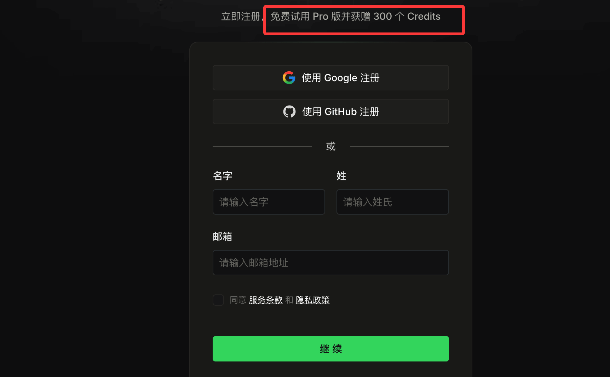
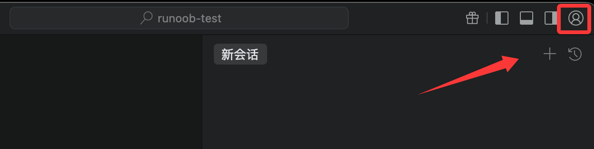
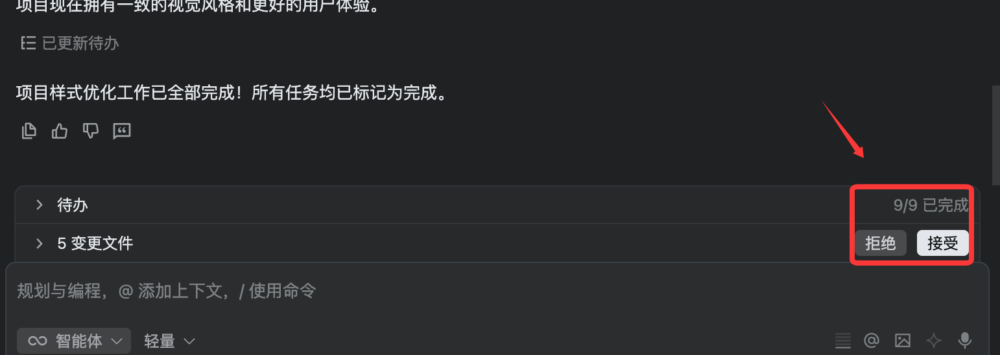
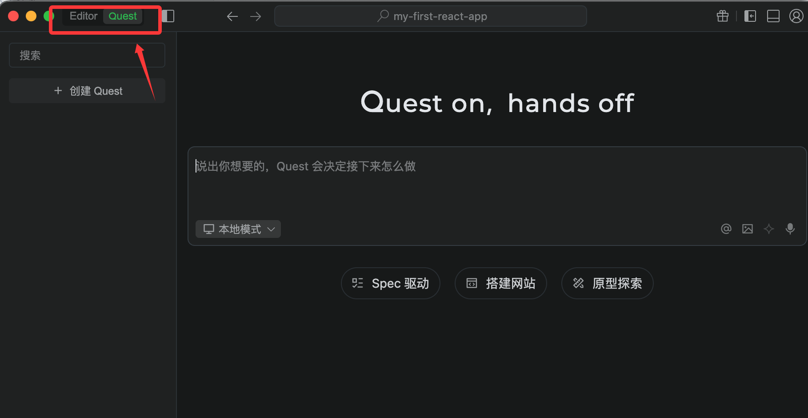

Developing React with Qoder
Qoder is an AI programming platform built on the VSCode open-source framework. In this chapter, we will introduce developing React with Qoder.
Qoder (/ˈkoʊdər/) is an Agentic coding platform for real-world software development. By seamlessly combining enhanced context engineering with intelligent agents, it fully understands your codebase and advances development tasks in a systematic way.
Qoder provides capabilities such as intelligent code generation, intelligent Q&A, multi-file modification, and coding agents, enabling deeper thinking, more efficient coding, and better builds, delivering an efficient and smooth coding experience for developers.
Qoder Personal Edition is currently available for free trial to all users.
1. Register and install Qoder
We visithttps://qoder.com/Register a QoderWork account (free trial of Pro version and receive 300 Credits):

After registration, click the upper right corner'sDownloadbutton. According to your computer system, download the installer.

After downloading, double-click the file to start the installation, then double-click the Qoder IDE icon to launch Qoder.
Related links:
- Qoder official website:https://qoder.com/
- Qoder documentation:https://docs.qoder.com/zh/quick-start
- Qoder command-line tool:https://docs.qoder.com/zh/cli/quick-start
2. Log in to Qoder
In the upper right corner of the Qoder IDE, click the user icon, or use the keyboard shortcut (⌘ ⇧ , (macOS) or Ctrl Shift , (Windows)), then select Login.

If you don't have an account yet, in the opened page click the bottomRegister Nowlink to register an account, or use a Google or GitHub account to register directly.

After successful login, you will return to the Qoder IDE, and then we can freely use all features.

Looking at the overall interface, Qoder operates basically the same as VS Code. Since Qoder is built on VSCode, those familiar with VS Code will be right at home.
Open your React project
-
Open Qoder.
-
Method 1: MenuFile → Open Folder, select your project folder (e.g.,
my-first-react-app）。 -
Method 2 (Recommended): In the terminal, navigate to the project directory, then open with one click:
cd my-first-react-app qoder .
qoder .The command will directly open the current folder with Qoder.
Now you see the file explorer on the left, showing the project structure (such as src, public, etc.).

3. Start a new chat
Open the smart conversation panel
To start an AI conversation, log in to Qoder, then switch the secondary sidebar in the upper right corner.

Or open it using a keyboard shortcut. The macOS shortcut is⌘ L, and the Windows shortcut isCtrl L。
Select mode:
- Smart Q&A:A simple Q&A mode for answering programming questions. It provides solutions and suggestions based on context but does not modify code.
- Agent:An autonomous coding task execution mode with self-decision-making, environment awareness, and tool-usage capabilities. Based on the developer's coding needs, it can complete coding tasks end-to-end using tools such as project search, planning, file editing, and terminal operations. It also supports developer-configurable MCP (Model Context Protocol) tools, ensuring the coding workflow is highly aligned with personal development processes.

Next, we use theAgentmode to have it help us optimize the styling of the entire project:
Optimize the styling of the entire project

Then Qoder goes to work and starts making changes. When it's done, we clickAcceptbutton:

After that, Qoder displays the completed result:

Additionally, Qoder has a Quest mode, which is Qoder's autonomous programming feature. It lets the Agent complete development tasks end-to-end. We only need to describe the goal, and Quest will autonomously clarify requirements, plan solutions, execute code, and verify results—without continuous manual intervention.
To use Quest mode, simply toggle it in the upper left corner:

4. Install required plugins (Extensions)
Qoder also supports installing plugins. Click theExtensionsicon (four squares) in the left activity bar, or press the shortcut keyCtrl+Shift+X（macOS: Cmd+Shift+X) to open the extension marketplace.

Search for and install the following plugins (click Install):

-
ESLint(Author: Microsoft)
- Real-time code standards checking, officially recommended by React.
- After installation, errors will be highlighted in red in the code.
-
Prettier - Code formatter(Author: Prettier)
- Automatically formats code to maintain consistent style.
-
ES7+ React/Redux/React-Native snippets(Author: dsznajder)
- Code snippet powerhouse! Type shortcuts to quickly generate components.
- Common snippets:
rafce→ Generate arrow function component + export defaultrfc→ Generate function componentuseState→ Quickly generate useState
-
Path Intellisense(Author: Christian Kohler)
- Import path auto-completion (super useful when importing).
-
Bracket Pair Colorizer 2Or built-in bracket colorization
- Brackets are color-coded for easier reading of nested JSX.
-
GitLens(Optional, but strongly recommended)
- Git enhancement, view code commit history.
React-specific recommendations(Optional advanced):
- Tailwind CSS IntelliSense(If using Tailwind)
- React Developer Tools(Browser plugin already installed, not needed here)
After installation, restart Qoder (or pressCtrl+Shift+P → Reload Window）。